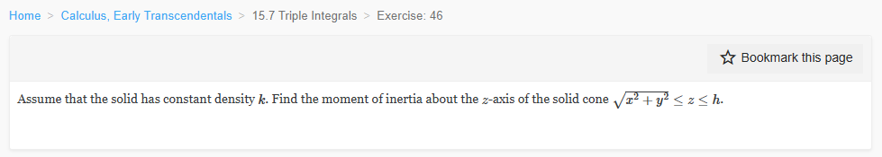
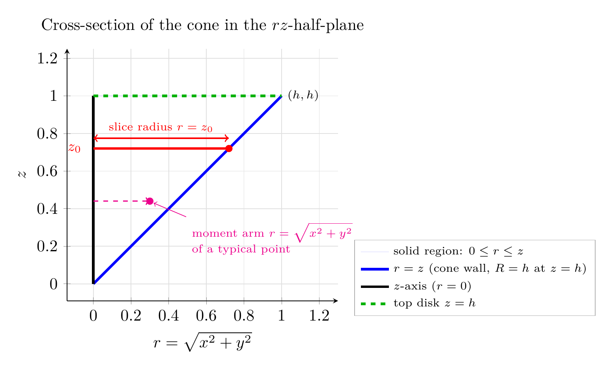
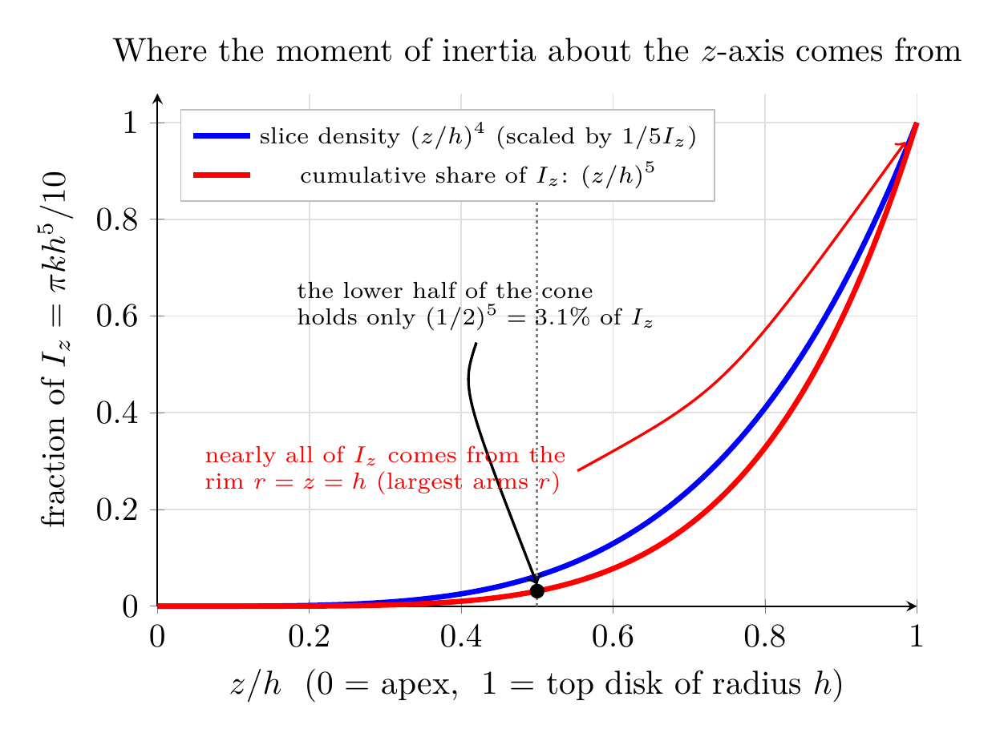

Please solve the problem in the following image.
(Image `20260928_003648_227939_utc_0800_0.png`. Alt text: Image: human_20260928_003648_227939_utc_0800)

20260928_003648_227939_utc_0800_0.png
End of problem
Answer
# Moment of inertia about the $z$-axis of the cone $\sqrt{x^2+y^2}\le z\le h$
## Step 1 — Read the solid
The solid is $E=\{(x,y,z):\ \sqrt{x^2+y^2}\le z\le h\}$. Since $\sqrt{x^2+y^2}=r$ in cylindrical coordinates,
$$
E=\{(r,\theta,z):\ 0\le \theta\le 2\pi,\quad 0\le z\le h,\quad 0\le r\le z\}.
$$
It is a **cone with its apex at the origin, opening upward**, cut off by the disk $z=h$; because $r\le z$, at height $z$ the cross-section is a disk of radius $z$, so the top disk has radius $R=h$.
The key geometric fact (visible in the $rz$-half-plane picture below): a point of the solid at height $z$ can be at most a distance $r=z$ from the $z$-axis.
---
\documentclass[border=8pt]{standalone}
\usepackage{pgfplots}
\pgfplotsset{compat=1.18}
\begin{document}
\begin{tikzpicture}
\begin{axis}[
width=7.4cm, height=7.0cm, axis lines=left,
xlabel={$r=\sqrt{x^2+y^2}$}, ylabel={$z$},
xmin=-0.14, xmax=1.30, ymin=-0.06, ymax=1.22,
xtick={0,0.2,...,1.2}, ytick={0,0.2,...,1.2},
axis equal, grid=both, grid style={black!12},
legend style={at={(1.06,-0.06)},anchor=south west,font=\scriptsize,draw=black!30,fill=white},
legend cell align=left,
title={Cross-section of the cone in the $rz$-half-plane},
clip=false]
\addplot[blue!18, fill opacity=0.85] coordinates {(0,0) (1,1) (0,1)} \closedcycle;
\addlegendentry{solid region: $0\le r\le z$}
\addplot[blue, ultra thick, domain=0:1, samples=2] ({x},{x});
\addlegendentry{$r=z$ (cone wall, $R=h$ at $z=h$)}
\addplot[black, ultra thick] coordinates {(0,0) (0,1)};
\addlegendentry{$z$-axis ($r=0$)}
\addplot[green!70!black, ultra thick, dashed] coordinates {(0,1) (1,1)};
\addlegendentry{top disk $z=h$}
% representative horizontal slice at z0
\addplot[red, ultra thick] coordinates {(0,0.72) (0.72,0.72)};
\addplot[red, only marks, mark=*] coordinates {(0.72,0.72)};
\draw[<->,red,thick] (0,0.775) -- (0.72,0.775) node[midway,above,red,font=\scriptsize]{slice radius $r=z_0$};
\node[red,font=\small] at (axis cs:-0.10,0.72) {$z_0$};
\node[font=\scriptsize,right] at (axis cs:1,1) {$(h,h)$};
% typical interior point and its moment arm about the z-axis
\draw[magenta, thick, dashed,->] (0,0.44) -- (0.30,0.44);
\addplot[magenta, only marks, mark=*] coordinates {(0.30,0.44)};
\node[magenta,font=\scriptsize,align=left] (lab) at (axis cs:0.95,0.24)
{moment arm $r=\sqrt{x^2+y^2}$\\ of a typical point};
\draw[magenta,thin,->] (lab.north west) -- (0.32,0.43);
\end{axis}
\end{tikzpicture}
\end{document}

pgfplots_0.png
---
## Step 2 — Definition of $I_z$
The distance from a point $(x,y,z)$ to the $z$-axis is $\sqrt{x^2+y^2}$, so with constant density $\rho=k$:
$$
I_z=\iiint_E (x^2+y^2)\,\rho\,dV
=k\iiint_E r^2\,dV,
\qquad dV=r\,dz\,dr\,d\theta .
$$
Note the **extra factor $r$** from the Jacobian: the integrand becomes $r^2\cdot r=r^3$.
## Step 3 — Evaluate the triple integral
Projecting onto the $r\theta$-plane ($0\le r\le h$, $r\le z\le h$):
$$
I_z=k\int_0^{2\pi}\!\!\int_0^{h}\!\!\int_{r}^{h} r^3\,dz\,dr\,d\theta .
$$
**Inner integral** (in $z$): $\displaystyle\int_r^h dz=h-r$.
**Middle integral** (in $r$):
$$
\int_0^{h} r^3(h-r)\,dr
= h\frac{h^4}{4}-\frac{h^5}{5}
= h^5\left(\frac14-\frac15\right)
= \frac{h^5}{20}.
$$
**Outer integral** (in $\theta$) contributes $2\pi$:
$$
I_z = k\cdot 2\pi\cdot \frac{h^5}{20}=\frac{\pi k h^5}{10}.
$$
---
pgfplots_1.png
---
## Step 4 — Check 1: slice the cone into thin disks
The figure above shows the washer element $dV\approx 2\pi r\,dr\,dz$: all of its mass sits at essentially the same distance $r$ from the axis, which is why $r^2$ factors out of the $\theta$- and (partly) the $r$-integration.
Equivalently, integrate the disks first. The disk at height $z$ has radius $z$, so
$$
dI_z=\underbrace{\tfrac12 (\rho\,dA_{\text{disk}})\,(\text{radius})^2}_{\text{a solid disk } \frac12 mR^2}
=\frac12\big(k\,\pi z^{2}\,dz\big)z^{2}=\frac{k\pi}{2}z^{4}\,dz ,
$$
$$
I_z=\frac{k\pi}{2}\int_0^{h}z^{4}\,dz=\frac{k\pi}{2}\cdot\frac{h^{5}}{5}=\frac{\pi k h^{5}}{10}\quad\checkmark
$$
The distribution plot below shows why the answer is dominated by the top: slice $z$ contributes $\propto z^4\,dz$, so the lower half of the cone supplies only $(1/2)^5=3.1\%$ of $I_z$.
---
\documentclass[border=8pt]{standalone}
\usepackage{pgfplots}
\pgfplotsset{compat=1.18}
\begin{document}
\begin{tikzpicture}
\begin{axis}[
width=9.6cm, height=7.0cm,
xlabel={$z/h$ \ (0 = apex,\ \ 1 = top disk of radius $h$)},
ylabel={fraction of $I_z=\pi k h^5/10$},
xmin=0,xmax=1, ymin=0,ymax=1.06,
xtick={0,0.2,...,1}, ytick={0,0.2,...,1},
grid=both, grid style={black!12},
axis lines=left,
title={Where the moment of inertia about the $z$-axis comes from},
every title/.style={font=\small},
legend style={at={(0.03,0.97)},anchor=north west,font=\scriptsize,fill=white,draw=black!25},
clip=false]
% shaded area under the slice-density curve (kept out of the legend)
\addplot[blue!18, fill opacity=0.9, draw=none, domain=0:1, samples=100, forget plot] {x^4} \closedcycle;
% slice density (scaled by 1/(5 I_z)) = (z/h)^4
\addplot[blue, ultra thick, domain=0:1, samples=100] {x^4};
\addlegendentry{slice density $(z/h)^4$ (scaled by $1/5I_z$)}
% cumulative fraction = (z/h)^5
\addplot[red, ultra thick, domain=0:1, samples=100] {x^5};
\addlegendentry{cumulative share of $I_z$: $(z/h)^5$}
\draw[gray, densely dotted, thick] (axis cs:0.5,0) -- (axis cs:0.5,0.95);
\addplot[black, only marks, mark=*, forget plot] coordinates {(0.5,0.5^5)};
\node[font=\scriptsize,black!60,right] at (axis cs:0.51,0.90) {$z=h/2$};
\node[font=\scriptsize,align=left] (A) at (axis cs:0.42,0.62)
{the lower half of the cone\\ holds only $(1/2)^5=3.1\%$ of $I_z$};
\draw[black,thick,->] (A.south) .. controls (axis cs:0.40,0.45) .. (axis cs:0.50,0.045);
\node[font=\scriptsize,red,align=left] (B) at (axis cs:0.30,0.28)
{nearly all of $I_z$ comes from the\\ rim $r=z=h$ (largest arms $r$)};
\draw[red,thick,->] (B.east) .. controls (axis cs:0.75,0.45) .. (axis cs:0.985,0.96);
\end{axis}
\end{tikzpicture}
\end{document}

pgfplots_2.png
---
## Step 5 — Check 2: the textbook formula $I_{\text{cone}}=\tfrac{3}{10}MR^2$
Mass of the solid (same region, integrand $k$ instead of $kr^2$):
$$
M=k\int_0^{2\pi}\!\!\int_0^{h}\!\!\int_r^h r\,dz\,dr\,d\theta
=2\pi k\int_0^{h}r(h-r)\,dr
=2\pi k\left(\frac{h^{3}}{2}-\frac{h^{3}}{3}\right)
=\frac{\pi k h^{3}}{3}=k\cdot\frac{\pi R^{2}h}{3},\qquad R=h ,
$$
which is density $\times$ cone volume $k\cdot\tfrac13\pi R^2h$ — correct. Then
$$
\frac{I_z}{M}=\frac{\pi k h^{5}/10}{\pi k h^{3}/3}=\frac{3}{10}h^{2}=\frac{3}{10}R^{2}\quad\checkmark
$$
exactly the standard moment of inertia of a solid cone about its axis of symmetry.
## Answer
$$
\boxed{I_z=\dfrac{\pi k h^{5}}{10}}
$$
(equivalently $I_z=\tfrac{3}{10}Mh^{2}$ with $M=\tfrac{\pi k h^{3}}{3}$, since the base radius equals the height $h$ here).
**Method summary for this kind of problem:** (1) rewrite the boundary $\sqrt{x^2+y^2}\le z$ as $r\le z$ to get the limits; (2) use $I_{\text{axis}}=\iirot (\text{distance to axis})^2\rho\,dV$ with $dV=r\,dz\,dr\,d\theta$; (3) exploit axial symmetry — the $\theta$-integral is always $2\pi$; (4) sanity-check with the disk-slicing form $dI=\tfrac12(dm)r_{\text{slice}}^2$ and with $I/M$ against a known table formula.